Thema's
Bestemmingen
Over ons
reisjunk
VERS VAN DE PERS
De ultieme reisroute voor Noord-Italie + tips
De 12 mooiste bezienswaardigheden van de Dolomieten
Tps voor Cingque Terre in Italie + wandelroute
10 Tips voor de leukste bezienswaardigheden in Florence
Tips voor een auto huren in Italie
De meest complete wandeling bij Drie Zinnen
MEEST GELEZEN
Wat te doen in Kaapstad?
17 Tips voor de leukste bezienswaardiheden in Lissabon
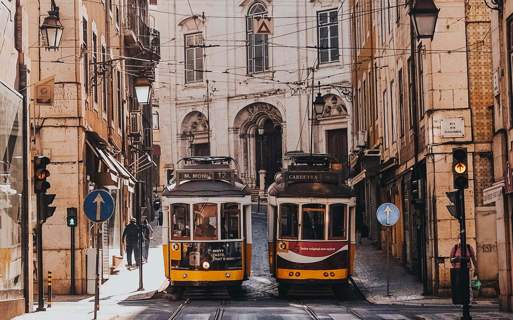
Must do: Eilandhoppen ronde de komodo eilanden bij Flores
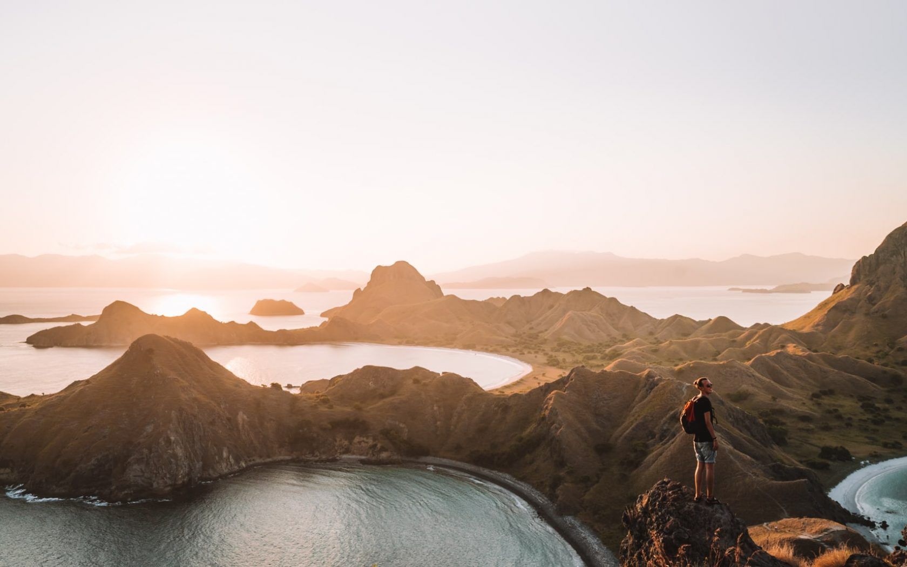
Trucs & tips om goedkoop vliegtickets te boeken
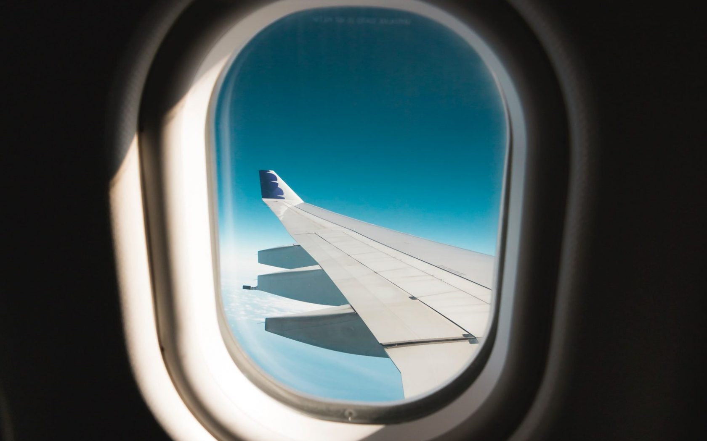
Wat te doen in Kaapstad?
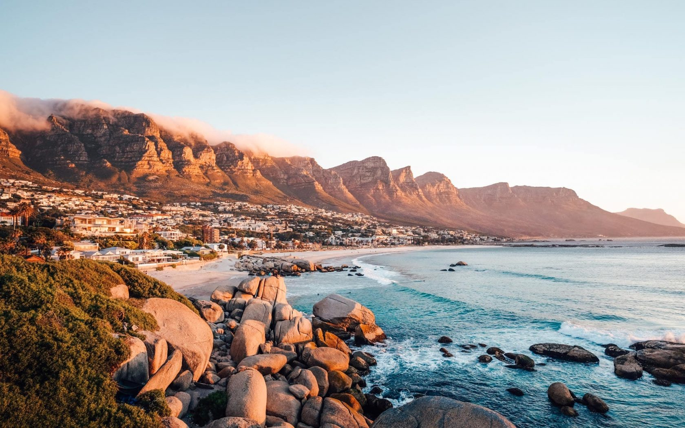
10 Activiteiten die je niet mag missen in Peru
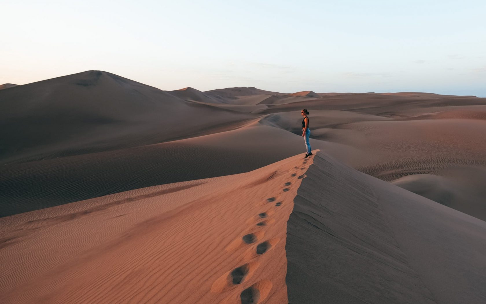
ONZE REISROUTES
Reisroute kroatie
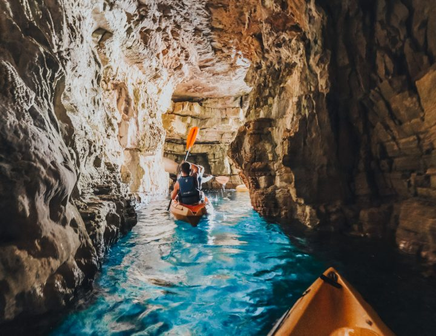
Reisroute Costa Rica
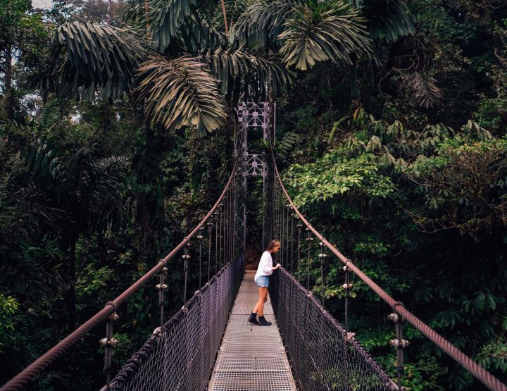
Reisroute Jordanie
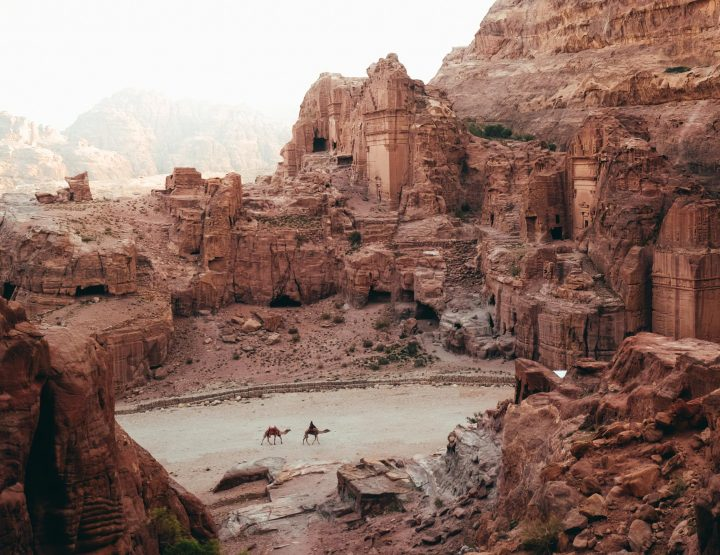
Reisroute Marokko
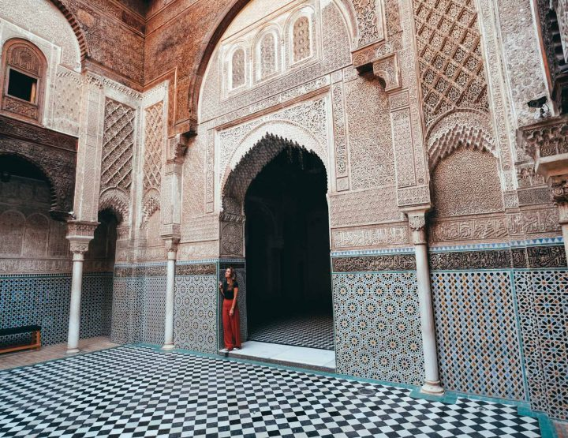
Reisroute Oman
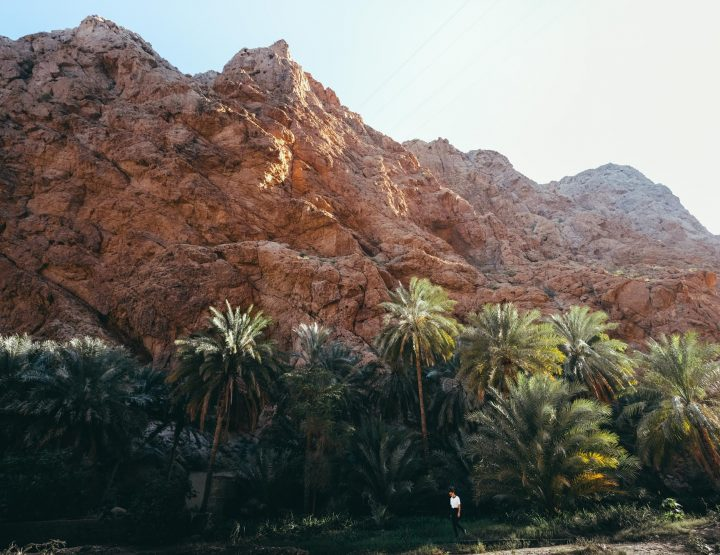
Reisroute Mexico
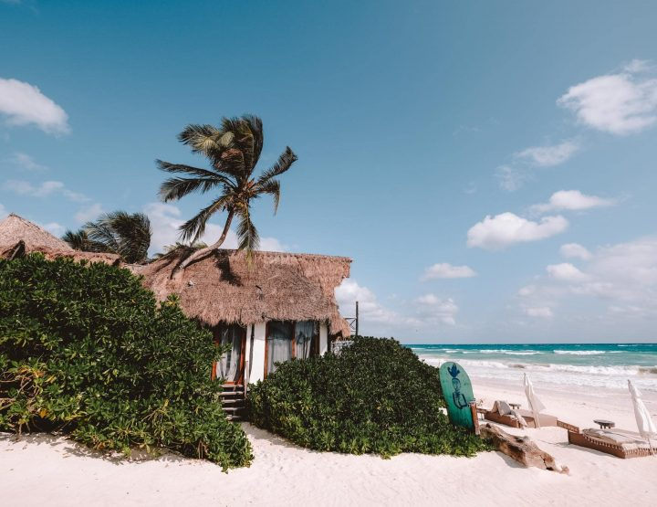